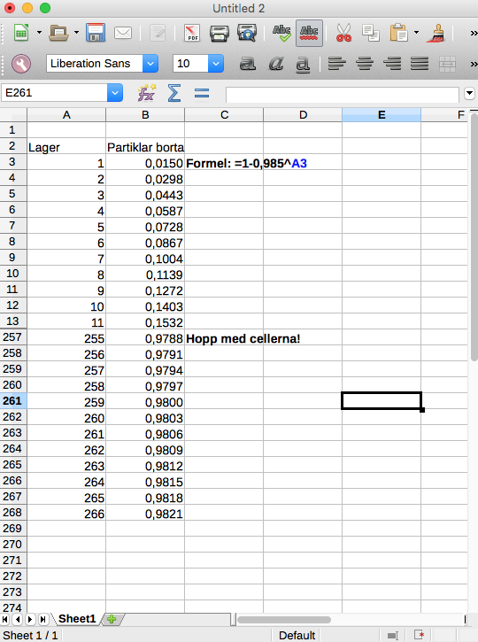

6. Procentuell förädring
För att stöda ungdomar att studera betalar staten ut studiestöd i form av bostadsbidrag och studiepenning. Studiepenningen är 250,28 € per månad. Regeringen beslutar sig att höja studiepenningen med först 1,0 % och sedan med 0,8 %. Hur stor är studiepenningen efter den första höjningen? Hur stor är den efter båda höjningarna?
Lösning
Studiestödet efter första höjningen är \((1+0,01)250,28 = 252,78\).
Efter andra höjningen är den \((1+0,008)252,78 = 254,80\) €.
Diskutera med din bänkkamrat eller fundera för dig själv: Varför kan vi inte addera ihop procenterna i introduktionen för att få den totala höjningsprocenten?
Lösning
Vi testar. Om ökningen är 1,8 % är slutsumman \((1+0,018)250,28 = 254,79\) €.
Med ökningarna 1 % och 0,8 % är den totala procentuella förändringen \(\dfrac{254,80}{250,28}=1,01805977\).
OBS! Summorna är nästan samma men ändå inte. När vi har procentuell förändring måste vi beakta förändringarna skilt för sig.
Exempel 1 Anna deponerar 5 000 € på ett konto. Hur mycket finns på kontot efter 10 år om räntesatsen är
- \(0,5\;\%\)
- \(6\;\%\)?
Lösning
År 1 har vi \(5000 (1+0,005) = 5000\cdot 1,005\)€.
År 2 har vi \(5000\cdot 1,005 (1 +0,005) = 5000\cdot 1,005^2 \) €.
År 3 har vi \(5000\cdot 1,005^2\cdot 1,005 = 5000\cdot 1,005^3\) €.
Efter n år har vi \(5000\cdot 1,005^n \).
Efter 10 år har vi alltså \(5000\cdot 1,005^{10}=5255,70\) €.
Ändrar vi räntan till 6 % och följer samma logik som ovan får vi att efter \(n\) år har vi \(5000\cdot 1,06^n \). Efter 10 år har vi \(5000\cdot 1,06^{10}= 8954,24 \).
Exempel 2 Priset på en vara höjdes före jul. Efter jul sänktes priset för varan med 40 % så att priset blev lika stort som det ursprungliga före jul. Med hur många procent hade man höjt priset före jul?
Lösning
Vi betecknar varas pris i början med \(a\). Efter prishöjningen, \(p\) %, har varan priset \(a(1+\dfrac{p}{100})\). Detta pris sänks 40 % och landar på det ursprungliga priset \(a\).
Vi får alltså
\(\begin{array}{rcll} a(1+\dfrac{p}{100})(1-0,4) & = & a &\mid /a \\ (1+\dfrac{p}{100})\cdot 0,6 & = &1 &\mid /0,6 \\ 1 + \dfrac{p}{100} & = & \dfrac{1}{0,6} \\ \dfrac{p}{100} &=& \dfrac{1}{0,6} -1 & \mid \cdot 100 \\ p & = & 100(\dfrac{1}{0,6}-1) = 66,66 \% \end{array}\)
Svar: Priset skall höjas med 66,7 %.
Exempel 3 Hur mycket 9-procentig saltlösning bör man tillföra 2 liter 3-procentig saltlösning så att man får en lösning vars salthalt är 6 %?
Lösning
Vi ställer upp en ekvation. Vi har nu \(0,03\cdot 2\) liter salt och sätter till \(0,09\cdot x\) liter salt. Totalt har vi då \((2+x)\cdot 0,06\) liter salt i lösningen.
Alltså
\(\begin{array}{rcl} 0,03\cdot 2 +0,09 \cdot x&=&(2+x)\cdot 0,06 \\ 0,06 +0,09x &=&0,12 + 0,06x \\ 0,03x&=&0,06 \\ x&=&\dfrac{0,06}{0,03}=2\\ \end{array}\)
Svar: 2 liter 9 % saltlösning bör tillsättas.
Uppgifter
- Uppgift
- Deluppgit a
Lösningen
- Deluppgit b
Lösningen
- Deluppgit c
Lösningen
- Deluppgit a
- Ett vattenfilter består av flera tunna hinnor som var för sig filtrerar vattnet. Ett filterlager tar bort 1,5 % av smutspartiklarna i vattnet. Hur många procent tar 10 lager bort?
I början har vi \(a\) st partiklar.
Ett lager tar bort 1,5 %, då är det kvar \((1-0,015)\cdot a = 0,985a\) partiklar efter första filtreringen. Efter 10 st filer är det kvar \(0,985^{10} a = 0,8597\ldots\) partiklar.
Den procentuella minskningen är \(1-0,8597\ldots = 0,14026\ldots = 14,0\) %.
- Hur många procent avlägsnar 100 lager?
Efter 100 st filer är det kvar \(0,985^{100} a = 0,2206\ldots a\) partiklar.
Den procentuella minskningen är \(1-0,2206\ldots = 0,77939\ldots = 77,9\) %.
- Hur många lager behöver vi för att vattnet skall renas så att 98 % av smutspartiklarna är borta?
På LibreOffice får vi något i stil med

Eller lös ekvatonen \(1- 0,985^n =0,98\).
- Hur många procent avlägsnar 100 lager?
- Priset för mjölk sänktes med 20 %. Med hur många procent borde försäljningen öka för att värdet av försäljningen skall hållas konstant?
Från \((1+\dfrac{p}{100})\cdot 0,80a = a\) får vi att \(p=0,25\)
Försälningen borde öka med 25 %.
- Värdet på en bil sjunker med 10 % per år. Vad är bilen värd efter 8 år då den som ny var värd 25 000 €?
Bilda en tabell där det framkommer hur mycket bilen är värd vid varje år.
Eftersom bilen förlorar 10 % av sitt värde varje år är värdet \(0,9 \cdot 25 000\) efter första året. År 2 är värdet \(0,90^2 \cdot 25000\). Efter 8 år är värdet \(0,9^8 \cdot 25000 = 10761,68 \approx 10 800 \approx 11000\) €.
- En studerande löste följande uppgift:
För en överfiskad fiskart gäller att beståndet minskar med 2,5 % varje år. I en sjö finns det 1 500 fiskar. Efter hur många år är beståndet nere i hälften om trenden forstätter konstant?
Lösnigen var följande
Hälften betyder \(\dfrac{1500}{2} = 750\) fiskar. Det minskar med 2,5 % varje år. Alltså efter \(\dfrac{750}{2,5} = 300\) år är beståndet nere i hälften.
Lös uppgiften, korrigera felen och förklara varför som det far åt skogen med lösningen ovan.
- För att få större skatteintäkter beslutar sig en regering för att höja mervärdeskatten för sötsaker på 20 % med 3 procentenheter. Det som händer är att försäljningen minskar med 1,5 %. Går det som regeringen hoppades och hur många procent högre intäkter får de?
Gör en tabell
procent försäljning statens inkomst 20 % 23 % Vi gör följande tabell
procent försäljning statens inkomst 20 % \(a\) \(0,20a\) 23 % \((1-0,015)a\) \(0,23 \cdot 0,985a\) Det procentuella förhållandet är \(\dfrac{0,23\cdot 0,985a}{0,20a} = 1,13275\).
Vi har en ökning på 13 % eller 13,3 %.
- Jämför hur mycket pengar du kommer att ha på kontont när du fyller 60 år då du som 20, 30 eller 40 åring deponerar 1000 € med den årliga avkastningen 5%.
- Som 20-åring är summan
\(1,05^{40}\cdot 1000 = 7039,99\) €.
- Som 30-åring är summan
\(1,05^{30}\cdot 1000 = 4321,94\) €.
- Som 40-åring är summan
\(1,05^{20}\cdot 1000 = 2653,30\) €.
- Som 20-åring är summan
- Torv innehåller 90 % vatten. Hur många procent av vattnet måste avdunsta för att torven skall innehålla 45 % vatten efter torkningsprocessen?
massa a b vatten 0,9a 0,45b annat 0,1a 0,55b "Annat" är konstant! Arbeta utgående från detta.
\(p = \dfrac{0,1 \cdot 0,45}{0,55 \cdot 0,9} = 0,09090\ldots\). Eftersom mängden minskar får vi den eftersökta procenten som \(1 - \dfrac{0,1 \cdot 0,45}{0,55 \cdot 0,9} = 0,9090\ldots\), vilket ger 91 %.
- Äpple består av 70 % vatten och 4 % socker. Äpple torkas så att andelen vatten sjunker till 10 %. Bestäm andelen socker i äpplena efter torkningen.
då nu total massa a b vatten 0,7a 0,1b socker 0,04a pb inte vatten 0,3a 0,9b Kombinera raderna med socker och inte vatten. \(0,04a = pb\) och \(0,3a=0,9b\).
Lös ut \(b\) ur dessa: \(b=\dfrac{0,04a}{p}\) och \(b=\dfrac{0,3a}{0,9}\).
Kombination av dessa ger \(p=\dfrac{0,04\cdot0,9}{0,3} = 0,12\). Alltså 12 %.
- I ett bostadshus är hyresintäkterna 12 % lägre än kostnaderna för underhållet. Med hur många procent borde hyrorna höjas, för att de skall bli 10 % högre än underhållskostnaderna, när dessa samtidigt stiger med 4 %?
Tabellen ser ut som:
då nu hyresintäkter \(0,88a\) \(0,88a \cdot p = 1,1 \cdot 1,04 a\) underhållet \(a\) \(1,04a\) Då vi löser ut \(p\) från \(0,88a\cdot p = 1,1\cdot 1,04a\) får vi \(p=1,30\).
Hyrorna borde höjas med 30 %.
- Äpple består av 70 % vatten och 4 % socker. Äpple torkas så att andelen vatten sjunker till 10 %. Bestäm andelen socker i äpplena efter torkningen.